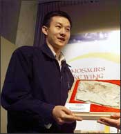

Xu Xing
1969–
Xu Xing grew up in a remote village in western China. He originally wanted to pursue a career in computer technology or business, but this path didn't work out for him. He entered the field of paleontology only when he wasn't able to follow his true ambitions.
As it turns out, however, Xing has a knack for uncovering important fossil finds. He conducts many of his expeditions in China's Liaoning Province, where the world's largest concentration of feathered fossils has been discovered. Thus far Xing and his team have unearthed 11 new dinosaur species, several of which had feathers. His most recent discovery, Microraptor gui, appears to have been covered entirely in feathers and to have glided from tree to tree, similar to modern flying squirrels.
Xing works in Beijing at the Chinese Academy of Sciences' Institute of Vertebrate Paleontology and Paleoanthropology, where he is a researcher and professor.